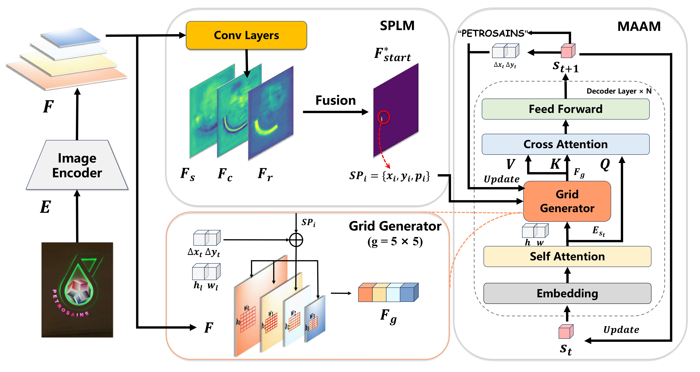

|
Jiahao Lyu
I'm a PhD student at IIE, CAS in Beijing, China.
At IIE, I've worked on InTimeLab, IIE, CAS, advised by Professor Yu Zhou and Can Ma.
Before that, I got a Bachelor`s degree from Beijing Normal University.
Email /
CV /
Scholar /
Github
|
|
News
-
2025/06: A co-first-author paper has been accepted by ICDAR 2025.
-
2025/05: A first-author paper has been accepted by TOMM 2025.
-
2025/04: A co-first-author paper has been accepted by IJCAI 2025.
-
2025/03: Selected as a Reviewer of IJCAI 2025.
-
2025/02: Selected as a Reviewer of ICDAR 2025.
-
2024/12: A first-author paper has been accepted by AAAI2025.
-
2024/12: A cooperative paper has been accepted by ICASSP2025.
-
2023/06: A cooperative paper has been accepted by PRCV2023.
-
2022/12: Third Prize, Channel of street text detection and recognition, 1st International Algorithm Cases
Competition, Pazhou Lab, Huangpu.
-
2022/06: A cooperative paper has been accepted by ACM MM2022.
Research
I'm interested in Scene Text Detection, Recognition & Spotting. Below are some selected publications.
|
|
|
The Devil is in Fine-tuning and Long-tailed Problems: A New Benchmark for Scene Text Detection
Tianjiao Cao,
Jiahao Lyu,
Weichao Zeng,
Weiming Mu,
Yu Zhou,
IJCAI, 2025
Code
/
arXiv
We uncover two key factors contributing to this discrepancy through extensive scene text detection experiments, Fine-tuning Gap and long-tailed distribution of texts we advocate for a Joint-Dataset Learning (JDL) protocol to alleviate the Fine-tuning Gap. Additionally, an error analysis is conducted to identify three major categories and 13 subcategories of challenges in long-tailed scene text, upon which we propose a Long-Tailed Benchmark (LTB).
|
|

|
Arbitrary Reading Order Scene Text Spotter with Local Semantics Guidance
Jiahao Lyu,
Wei Wang,
Dongbao Yang,
Jinwen Zhong,
Yu Zhou,
AAAI, 2025
Code
/
arXiv
We propose LSGSpotter, a local semantics-guided scene text spotter to handle the arbitrary reading order text instances without sophisticated detection.
|
|
|
Char-SAM: Turning Segment Anything Model into Scene Text Segmentation Annotator with Character-level Visual Prompts
Enze Xie
Jiaho Lyu,
Daiqing Wu,
Huawen Shen,
Yu Zhou,
ICASSP, 2025
arXiv
We propose an automatic annotation pipeline named Char-SAM, that turns SAM into a low-cost segmentation annotator with a Character-level visual prompt.
|
|
|
TextBlockV2: Towards Precise-Detection-Free Scene Text Spotting with Pre-trained Language Model
Jiaho Lyu,
Jin Wei,
Gangyan Zeng,
Zeng Li,
Enze Xie,
Wei Wang,
Can Ma,
Yu Zhou,
TOMM, 2025
arXiv
Extension of TextBlock (ACM MM2022)
|
|
{kind=link}